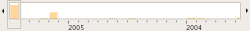

F-Spot
Dieser Artikel wurde für die folgenden Ubuntu-Versionen getestet:
Ubuntu 14.04 Trusty Tahr
Zum Verständnis dieses Artikels sind folgende Seiten hilfreich:
F-Spot  ist ein Programm zur Verwaltung der eigenen Fotosammlung für den GNOME-Desktop. Unter KDE bzw. Kubuntu bietet digiKam fast identische Möglichkeiten.
ist ein Programm zur Verwaltung der eigenen Fotosammlung für den GNOME-Desktop. Unter KDE bzw. Kubuntu bietet digiKam fast identische Möglichkeiten.
Noch kann F-Spot keine Änderungen im Dateisystem überwachen. Somit eignet sich das Programm nicht für Anwender, die gern auch auf Dateisystem-Ebene ihre Bilder verwalten möchten. Diesen Wunsch können nur Programme wie gThumb, Geeqie usw. erfüllen, die nicht auf eine interne Datenbank zur Bildverwaltung zurückgreifen.
Zu den vielfältigen Möglichkeiten zählen:
Import von Fotos direkt von digitalen Kameras
Selbstständige Dateiverwaltung
Kommentieren von Bildern
Volltextsuche in Kommentaren
Komplexe Suche mittels Markierungen
Grundlegende Bildbearbeitungsfunktionen
Bilder als E-Mail verschicken
Vielseitiger Bild-Export
Anzeige von RAW-Dateien
Installation¶
F-Spot kann direkt aus den offiziellen Paketquellen heraus installiert [1] werden.
f-spot
 mit apturl
mit apturl
Paketliste zum Kopieren:
sudo apt-get install f-spot
sudo aptitude install f-spot
Anschließend findet man das Programm im Menü unter "Grafik -> F-Spot Fotoverwaltung" [2].
Import von Bildern¶
F-Spot kann von verschiedenen Quellen Bilder importieren: Festplatten, Wechseldatenträgern oder direkt von Kameras. Dies geschieht über "Datei -> Importieren". Alternativ kann man Bilder auch einfach per Drag'n Drop aus dem Dateimanager in F-Spot ziehen.
F-Spot verwaltet die Ordnerstruktur der Fotos selbst, sofern die Option "Dateien in den Fotoordner kopieren" aktiviert ist. Über "Bearbeiten -> Einstellungen" kann der Hauptordner eingestellt werden. Falls man also Bilder importiert, die sich schon auf der Festplatte befinden, werden u.U. Kopien angelegt. Die Ordnerstruktur hat die Form ~/Fotos/2007/12/31.
Faktisch sollte also bei einer bestehenden Bildersammlung im eigenen Homeverzeichnis folgendermaßen vorgegangen werden:
F-Spot starten und evtl. Import abbrechen
den Pfad zu vorhandenen Bildersammlung als Hauptordner einstellen
F-Spot beenden und neu aufrufen
Auf Wunsch kann die Anzeige noch so konfiguriert werden, dass die Übersicht nach Ordnern sortiert wird. Trotzdem fehlt im Programm die Anzeige von Ordnern - "it's not a bug, it's a feature..."
Sobald Bilder importiert wurden, werden ausschließlich die neu importierten angezeigt. Man kann den Filter entfernen, indem man auf das rote Kreuz oben rechts klickt.
Hinweis:
Beim Import sollte man auf jeden Fall auf die Einstellung "Datei in den Ordner Photos kopieren" achten. Falls man keine Kopie der Bilder haben will, sollte man das Häkchen entfernen.
Um die zuletzt importierten Fotos nochmal anzuzeigen im Menü auf "Suchen -> Nach Importen -> Letzter Import" klicken.
F-Spot entfernt die Dateien beim Kopieren nicht von der Digitalkamera! Es gibt auch keine Option, mit der man F-Spot anweisen kann, dies zu tun. Die Dateien müssen vom Benutzer auf einem anderen Weg von der Kamera entfernt werden.
Betrachten¶
Übersicht¶
Standardmäßig wird eine Übersicht der Bilder durch kleine Voransichten gezeigt.
Vollansicht¶
Mit einem Doppelklick auf das Bild wechselt man zwischen Vollansicht und der Übersicht. In der Vollansicht kann man Bilder bearbeiten.
Vollbild¶
Um die Bilder im Vollbild zu sehen, einfach anwählen. Um diesen Modus zu verlassen, den Mauszeiger bewegen und "Vollbild verlassen" auswählen.
Diashow¶
Um die Diashow zu starten, genügt es anzuwählen. Die Bilder der Bibliothek werden nun abgespielt.
Lupe¶
Eine sehr interessante Funktion stellt die Lupe dar. Mit gedrückter Taste V kann man über die Bilder gleiten. Diese werden vergrößert dargestellt und Informationen wie Erstellungsdatum, Uhrzeit der Erstellung sowie der Bildname angezeigt.
Verwalten und Sortieren von Bildern¶
Zeitleiste¶

In der Bildübersicht kann man mittels der Zeitleiste schnell zum gewünschten Jahr / Monat springen. Falls ein Bild das falsche oder kein Datum aufweist, kann man den Zeitstempel ändern.
Zeitangaben (Zeitstempel) beim Importieren und auf der Benutzeroberfläche¶
F-Spot ist für eine Verwaltung von Bildern eingestellt, deren Erstellungszeitpunkt in UTC gespeichert ist ("DateTimeOriginal" innerhalb der Exif-Daten). Dies ist die weltweit eindeutige Referenz für Zeitangaben. F-Spot berechnet intern aus der im System eingestellten Zeitzone die Differenz zu UTC und wendet diese bei Import und Anzeige von Bildern auf die in den Bilddateien gespeicherten Exif-Daten ("DateTimeOriginal") an. Die mitteleuropäische Zeit errechnet sich im Winter als UTC+1 Stunde und im Sommer als UTC+2 Stunden.
Unter Umständen führt dies bei der Speicherung und der Darstellung der Zeitstempel zu Problemen, vor allem dann, wenn Kamera und Rechner (BIOS-Zeit und/oder Systemzeit) auf Lokalzeit eingestellt sind. Wenn Die Option 'Write metadata to file' ("Markierungen und Beschreibungen von Fotos innerhalb der Bilddateien hinterlegen") gewählt ist, kann F-Spot beim Importieren von Bildern den Exif-Zeitstempel "DateTimeOriginal" beim Kopieren der Bilddatei in den Fotoordner verändern - oder sogar den Zeitstempel in der Original-Datei, sofern nicht kopiert wird. Kamerazeit, Systemzeit und auch der Zeitpunkt des Imports (Sommerzeit oder Winterzeit) spielen dabei eine Rolle. Darüber hinaus kann F-Spot sich unterschiedlich bei der Anzeige gerade eben importierter und früher importierter Bilder verhalten (möglicherweise spielt hier auch die Kompilierung unterschiedlicher Versionen eine Rolle). Im ungünstigsten Fall führt dies dazu, dass sowohl die in den Dateien gespeicherte als auch die auf der Benutzeroberfläche angezeigte Zeit nicht mehr korrekt ist. Dies betrifft insbesondere Bilder, die vor längerer Zeit (mit anderen F-Spot-Versionen oder Einstellungen) importiert wurden, und bei denen der genaue Erstellungszeitpunkt im Nachhinein sehr schwer zu ermitteln ist.
Es kann versucht werden, dem Programm F-Spot unabhängig von der Systemzeit die Zeit UTC vorzugeben. Dazu wird F-Spot in einer Shell gestartet, in der vorab eine Variable "TZ" mit dem Wert "UTC" an die weiteren Prozesse übergeben wird. Am einfachsten geht dies in Terminal durch den Befehl "TZ=UTC f-spot &". Der Eintrag dieses Befehls direkt in das GNOME-Menü funktioniert nicht. Für das GNOME-Menü muss dazu ein simples Shellscript mit diesen Zeilen "TZ=UTC" und "f-spot" angelegt werden, dieses ausführbar gemacht werden und dann im Menü ein Verweis auf das Skript angelegt werden. Auch der Import-Funktion kann diese Variable vorgegeben werden. Dazu wird dem bereits bestehenden Skript /usr/bin/f-spot-import mit Root-Rechten zu Beginn die Zeile
export TZ=UTC
eingefügt [3].
Es empfiehlt sich, sich bei der Verwaltung der Bilder zu überlegen, welche Zeit (UTC oder Lokalzeit) in der Kamera und auf dem Rechner (in den Exif-Dateien und/oder bei der Verwaltung und der Anzeige) verwendet werden soll, und anhand von Referenzbildern (Uhren fotografieren) die Wirkung der aktuellen Einstellungen in der aktuellen Installation auszutesten. Eine korrekte Kamerazeit ist auch für die korrekte Sortierung der Bilddateien beim Speichern im Foto-Ordner unerlässlich.
Markierungen (Tags)¶
F-Spot ermöglicht das Setzen von sogenannten Markierungen bzw. Tags, mit deren Hilfe man Bilder sortieren und filtern kann.
Man kann auch eigene Markierungen erstellen. Oft empfiehlt es sich, Markierungen erst nach dem Import zu erstellen. Um neue Markierungen zu erstellen, mit der rechten Maustaste in die Linke Spalte klicken und "Neue Markierung erstellen" anklicken. Markierungen kann man auch mit Drag'n Drop organisieren. Zusätzlich lässt sich das Symbol der Markierung editieren und mit dem Ausschnitt eines beliebigen Bildes dieser Markierung ersetzen.
Kommentare¶
In der Vollansicht kann man einem Bild ein Kommentar zuweisen. Sofern unter "Bearbeiten -> Einstellungen" die Option "Metadaten in Dateien schreiben" aktiviert ist, werden die Kommentare direkt in den Exif-Informationen der Bilddatei eingebettet (siehe Metadaten).
Beim Export nach Flickr und in Webgalerien wird der Kommentar als Bildunterschrift sichtbar. Man kann auch eine Live-Suche innerhalb F-Spots in den Kommentaren vornehmen. Indexierungsprogramme wie Beagle, Tracker oder Google Desktop werten diese Kommentardaten ebenfalls aus. Somit stellt die Kommentarfunktion eine sehr gute Möglichkeit dar, Fotos zu sortieren und wieder zu finden.
Bilder suchen und finden¶
Volltextsuche in Kommentaren¶
Die Volltextsuche in Kommentaren kann man in der Übersicht über die Taste "/" (= ⇧ + 7 ) finden. Die Volltextsuche ist im Menü noch nicht verknüpft.
Komplexe Suchen mit Markierungen¶

ODER¶
Mit einem Doppelklick auf Markierungen werden automatisch die Markierungen als Suchfilter verodert.
UND¶
Zuerst ein Suchfilter mit einem Doppelklick auf eine Markierung anwenden. Dann im Menü auf "Suchen -> Ausgewählte Markierung suchen mit -> "Name der ersten Markierung"" klicken. Man sieht nun die Schnittmenge der Suchergebnisse.
NICHT¶
Eine Markierung als Suchfilter anwenden. In der orangenen Leiste befindet sich nun die Markierung. Dort mit der rechten Maustaste eine Markierung anklicken und dann auf"Ausschließen" klicken.
Bearbeiten¶
Die meisten Funktionen zum Bearbeiten von Bildern sind in der Vollansicht verfügbar. Hierunter gehören unter anderem:
Seitenverhältnis
Bild zuschneiden
Rote-Augen-Reduktion
Farbabgleich
Bildumwandlung: s/w
Bildumwandlung: Sepia
Begradigen von Bildern (z.B. "stürzende Linien")
automatischer Farbabgleich
Weiterhin kann man über rechte Maustaste "Öffnen mit -> GIMP Image editor" die Bilder auch außerhalb von F-Spot bearbeiten. F-Spot verwaltet sehr komfortabel die bearbeiteten Bilder, immer ohne die Originale zu ändern. Dabei wird eine Kopie im Ursprungsordner der Datei angelegt.
Zeitstempel¶
Man kann die Zeitstempel mehrerer Dateien verschieben. Dabei handelt es sich technisch um das Ändern der Exif-Informationen, die dafür ausschlagend sind, wo in der Zeitleiste die Bilder sortiert werden.
Um den Zeitstempel zu ändern, Bilder auswählen und im Menü auf "Bearbeiten -> Uhrzeit anpassen" klicken. Dies funktioniert in der Übersicht und in der Vollansicht.
Export¶
F-Spot bietet die Möglichkeit, einzelne Bilder oder die komplette Sammlung zu exportieren:
Flickr
Facebook
Picasaweb
SmugMug
23hq
Web-Galerie
Ordner
CD
Die jeweilige Exportfunktion erreicht man über "Datei -> Exportieren". F-Spot speichert die eingegebenen Passwörter im GNOME Schlüsselbund ab. Gibt man das Passwort für Picasaweb falsch ein, stürzt F-Spot beim Versuch des Export ohne Vorwarnung ab. Lösung: das im Schlüsselbund gespeicherte Passwort löschen.
CD¶
Um ein Bild auf CD bzw. DVD zu brennen, wählt man dieses mit der Maus aus. Sollen mehrere Bilder gebrannt werden, hält man während der Auswahl Strg gedrückt. Nachdem diese beendet ist, "Datei -> Exportieren nach -> CD" auswählen. Im sich nun öffnenden Dialog die Option "Nur diese Fotos auf CD schreiben" anwählen, wenn keine weiteren Dateien mehr auf das Medium gebrannt werden sollen. Ansonsten werden Dateien, die sich (noch) im virtuellen Ordner burn:/// von Nautilus befinden, ebenfalls auf den Datenträger geschrieben.
Ordner¶
Die Export-Option "Ordner" bietet die Möglichkeit, neben dem reinen Bildexport auch ein Webalbum auf HTML-Basis zu erstellen. Die Vorgehensweise zur Auswahl der Bilder erfolgt genauso wie unter CD-Export beschrieben. Im anschließenden Dialogfenster hat man die Möglichkeit, den Zielort und das Exportverfahren (nur Bilder oder als Webalbum) anzugeben und weitere Anpassungen, wie automatisches Drehen oder Ändern der Bildgröße, vorzunehmen.
Tastenkürzel¶
| F-Spot | |
| T | Markierung setzen / editieren |
| F9 | Seitenleiste ein/ausblenden |
| F11 | Vollbild |
| Strg + I | Metadaten |
| Strg + + | Zoom-in |
| Strg + - | Zoom-out |
| Strg + N | Importfunktion |
| 0 | Bild in Fenster einpassen |
| 1 | Zoom Faktor 1 |
| 2 | Zoom Faktor 2 |
| V | Lupe |
| Esc | Einzelansicht |
| ⇧ + 7 | Kommentarsuche |
| Strg + Alt + 1 - 5 | Mit 1-5 Sternen bewerten |
| Entf | Bild aus der Datenbank löschen |
| ⇧ + Entf | Alle Versionen des Bildes von der Festplatte löschen |
Backup¶
Vorausgesetzt, man hat kontinuierlich F-Spot die Dateiverwaltung überlassen, muss man nur zwei Sachen für ein vollständiges Backup kopieren:
Foto-Verzeichnis (normalerweise ~/Photos oder ~/Fotos)
F-Spot Datenbank (~/.config/f-spot/photos.db oder ~/.gnome2/f-spot/photos.db )
Hinweis:
Das funktioniert nur, wenn die Bilder wieder am selben Pfad landen.
Ändert sich zum Beispiel der Benutzername oder will man das Verzeichnis des Foto-Ordners ändern, kann man wie im folgenden beschrieben vorgehen.
Bilderverzeichnis verschieben¶
Für den Fall, dass man seinen Benutzernamen (Anmeldenamen) geändert hat oder seine Fotosammlung auf eine andere Festplatte schieben möchte, muss man etwas Handarbeit anlegen.
In den F-Spot Einstellungen muss der neue Pfad der Fotosammlung angegeben werden. Den Pfad des Fotoverzeichnisses ändert man unter "Bearbeiten -> Einstellungen".
In der Datenbank von F-Spot müssen die Pfade der Bilder geändert werden, da diese absolute Pfade zu den Bilder speichert.
Zum Ändern der Pfade in der Datenbank gibt es verschiedene Möglichkeiten:
Mit der Erweiterung Change Path¶
Change Path stellt eine komfortable Lösung dar, um den Pfad des Foto-Verzeichnisses anzugleichen. Aber:
Die Erweiterung befindet sich derzeit (April 2008) noch in Entwicklung und kann u.U. die Datenbank von F-Spot beschädigen.
Die Erweiterung wurde für die Version 0.4.0 von F-Spot geschrieben. Die Funktionalität für ältere oder neuere Versionen von F-Spot ist nicht getestet.
Der Vorgang hat keine Statusanzeige. Das Ändern von mehreren tausend Fotos kann manchmal Stunden dauern. Es wird empfohlen, F-Spot für die nächsten Stunden nicht zu beenden, um die Integrität der Datenbank zu gewährleisten.
Hinweis:
Es wird dringend empfohlen, vorher eine Sicherungskopie der Datenbank anzulegen!
Die Datenbankdatei liegt unter ~/.config/f-spot/photos.db oder ~/.gnome2/f-spot/photos.db. Die Erweiterung lässt sich folgendermaßen installieren:
In F-Spot auf "Bearbeiten -> Erweiterungen verwalten" klicken
Im neuen Fenster auf "Install Extensions" klicken
Unter "Tools" das Häkchen bei "ChangePath" setzen
Ein paar Mal auf "Forward" und dann auf "OK" klicken
Im Menü auf "Tools -> Change path to photos" klicken
Nun in Ruhe das Ende des Änderungen abwarten.
Mit einem Texteditor¶
Dazu kopiert man sich die Datenbankeinträge in eine Textdatei und ändert den Pfad der einzelnen Bilder mit der "Suchen und Ersetzen"-Funktion des Text-Editors. Um die Datenbankeinträge in eine Textdatei kopieren zu können, benötigt man das Paket:
sqlite3
mit apturl
Paketliste zum Kopieren:
sudo apt-get install sqlite3
sudo aptitude install sqlite3
Hinweis:
Vor Änderungen der Datenbank von F-Spot immer eine Sicherungskopie anlegen!
Nun kann man in einem Terminal [4] folgende Befehle eingeben:
cd ~/.config/f-spot # in den F-Spot Ordner wechseln cp photos.db photos.db.bak # Sicherungskopie anlegen sqlite3 photos.db .dump > f-spot.dump # Kopie der Datenbank als Text anlegen
Dann kann man in einem Editor die Datei f-spot.dump bearbeiten. Wenn man etwas nach unten scrollt, findet man die Einträge samt Pfad zu den Bildern. Dort kann man mit "Suchen" -> "Ersetzen" schnell alle Pfade ändern.
Mit folgenden Befehlen kopiert man die Textdatei wieder in die Datenbank:
cd ~/.config/f-spot # in den F-Spot Ordner wechseln rm photos.db # alte Datenbank löschen sqlite3 photos.db < f-spot.dump # Datenbank anhand der Textdatei anlegen
Überprüfung¶
Ob das Verschieben der Fotoverzeichnisses geklappt hat, kann man folgendermaßen überprüfen:
F-Spot neu starteten und evtl. Fehlermeldungen abwarten
ein beliebiges Foto rechts anklicken und auf "Copy Photo Location" klicken. Den Dateipfad in ein beliebiges Textfeld einfügen (z.B. Texteditor) und schauen, ob sich der kopierte Pfad mit dem aktuellem deckt.
Problembehebung¶
Links¶
Erweiterungen bzw. Plugins
für F-Spot
Der Bildverwalter F-Spot
 - Artikel im LinuxUser 08/2005
- Artikel im LinuxUser 08/2005Bilder verwalten
 Übersichtsartikel
Übersichtsartikel
- Erstellt mit Inyoka
-
 2004 – 2017 ubuntuusers.de • Einige Rechte vorbehalten
2004 – 2017 ubuntuusers.de • Einige Rechte vorbehalten
Lizenz • Kontakt • Datenschutz • Impressum • Serverstatus -
Serverhousing gespendet von